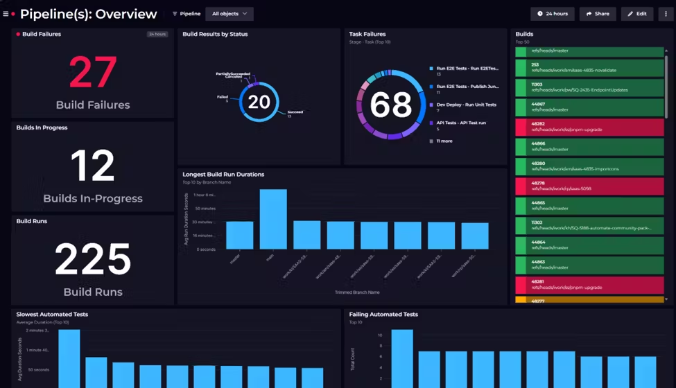

📌 Publisher Content
This page is designed to provide a structured, educational, and beginner-friendly learning path for DevOps enthusiasts. All tutorials, tools, and examples are for learning purposes only and do not represent live production systems.
Following these lessons helps learners understand DevOps concepts, CI/CD pipelines, Linux operations, Git version control, automation, monitoring, and best practices in a safe, guided environment.
Lesson 1: Introduction to DevOps
Hands-on tutorials and best practices for DevOps workflows.
DevOps is a cultural philosophy, set of practices, and tools that combine software development (Dev) and IT operations (Ops) to automate and streamline the software delivery lifecycle, enabling faster, more frequent, and reliable releases by fostering collaboration, shared responsibility, and continuous integration/delivery (CI/CD). It breaks down silos, shifting from separate teams to one integrated unit that manages the entire process from coding to deployment and monitoring, focusing on continuous improvement and delivering value quickly.
Core Concepts
Culture of Collaboration: Bridging the gap between Dev and Ops teams for shared goals and ownership. Automation: Automating manual tasks in the build, test, release, and deployment phases to reduce errors and speed things up. Continuous Integration/Continuous Delivery (CI/CD): Merging code changes frequently (CI) and automatically preparing them for release (CD). Infrastructure as Code (IaC): Managing infrastructure through code for consistency and automation. Monitoring & Feedback: Continuously monitoring applications in production and feeding insights back to developers for rapid improvement.
The DevOps Lifecycle (The Infinity Loop)
Plan: Define requirements and plan features.
Code: Developers write and version code (e.g., using Git).
Build: Code is compiled and packaged automatically.
Test: Automated tests (unit, integration, performance, security) run.
Release: Code is prepared for deployment.
Deploy: Code is automatically deployed to environments.
Operate: Manage the application in production.
Monitor: Observe performance and gather feedback.
Feedback Loop: Use insights to inform the next planning phase.
Sample Jenkins Dashboard for Continuous Build and Integration.

Sample Release Management Dashboard. The DevOps Lifecycle (The Infinity Loop)
Sample Release Management Dashboard. The DevOps Lifecycle (The Infinity Loop)

| Tool | Purpose | Example Command |
|---|---|---|
| Jenkins | Automation & CI/CD | Build Job |
| Docker | Containerization | docker run myapp |
| Ansible | Configuration Management | ansible-playbook site.yml |
DevOps is a set of practices that brings software development (Dev) and IT operations (Ops) together to shorten the development lifecycle and deliver high-quality software continuously.
- Continuous Integration (CI)
- Continuous Deployment (CD)
- Infrastructure as Code (IaC)
- Monitoring & Logging
- Collaboration & Communication
Lesson 2: Linux Basics for DevOps
Linux is the backbone for DevOps pipelines. Key commands and concepts:
- File operations: ls, cd, cp, mv, rm
- Permissions: chmod, chown, sudo
- Package management: apt, yum, dnf
- Process monitoring: ps, top, htop
- Networking: netstat, ping, curl
Lesson 3: Version Control with Git
Git is the standard version control tool in DevOps. Basics:
- git init, git clone
- git add, git commit, git push, git pull
- Branches: git branch, git checkout
- Merge & Resolve conflicts
- Remote repositories: GitHub, GitLab
Lesson 4: Continuous Integration & Deployment (CI/CD)
Automating builds, tests, and deployment improves speed and reliability:
- CI Tools: Jenkins, GitHub Actions, GitLab CI
- Build Pipelines: compile, test, package
- Deployment: automated to staging/production
- Monitoring pipelines & logs
Lesson 5: Monitoring & Automation
DevOps requires constant monitoring and automation for efficiency:
- System Monitoring: CPU, Memory, Disk, Network (Nagios, Zabbix)
- Application Monitoring: Logs, Uptime, Response time
- Automation: Scripts, Cron Jobs, Jenkins Jobs
- Alerting & Notifications